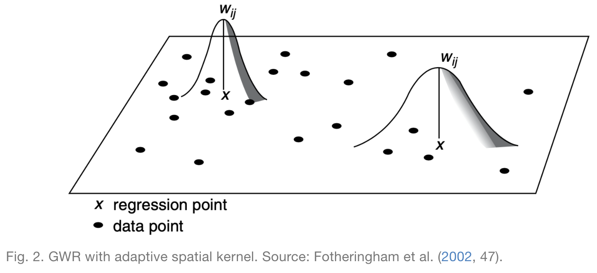

Abstract
In this analysis, I replicate Broomhead et al.’s study, “National Patterns in Paediatric Hospital Admissions for Dental Extractions in England”. Their original study applied Geographically Weighted Regression using the spgwr package in R to analyze spatial patterns and predictors of dental extractions in children in the United Kingdom. In this replication, I use different, more easily accessible, explanatory variables to predict the same response variable. I verify that Geographically Weighted Regression is a reasonable model for this data set, make a few improvements to their methodology, and find that my model performs similarly to theirs.
To see my complete research compendium for this project, click here
Study design
The following analysis is an exploratory study analyzing social predictors and spatial variation of pediatric dental extractions in the United Kingdom. The spatial extent of the study is the country of England, and the spatial scale is the local authority level, both of which I selected in order to match the original study. The spatial scale seems appropriate because it is the finest geographic unit for which dental extractions data are available. The analysis was conducted based on tooth extractions data from 2017-18 and census data from 2011.
Materials and procedure
Data and variables
- Extractions Data: Data on hospital-based dental extractions in the United Kingdom was provided by Public Health England, a government agency. This data indicates the number of times that children, grouped by local authority of the child’s residence, were admitted to a hospital for tooth extractions. For privacy reasons, all counts on the subnational level are rounded to the nearest 5, and any counts less than 6 are not provided to the public.
- Census Data: In their original paper, Broomhead et al. use several dentistry-related independent variables in their analysis. Their data was not readily available online, so I used several social variables from the United Kingdom’s 2011 census instead. On the local authority level, I queried for all of the available variables; the most relevant ones for this analysis include the number of children, single parent households, foreign born residents, individuals with severe disabilities, average cars per household, unemployed people, and total residents. This data is freely available from Social Explorer, a small business which provides online mapping and data services.
- Local Authority Geometries: Cartographic boundaries for England’s local authorities are provided by the United Kingdom’s Office for National Statistics, which houses an open data portal on its website.
Geographic and temporal characteristics
Dental extractions data is from 2017-18 and census data is from 2011. It is important to note that several groups of local authorities have merged to form larger local authorities between the 2011 census and today. The dental extractions dataset provides data in terms of the most updated local authorities, but the census data uses the old local authorities. Curiously, the data provider for the local authority geometries claims that the geometries are accurate as of May 2021, but close inspection of the downloaded data reveals that the boundaries actually match the 2011 boundaries.
For this reason, the spatial resolutions and unique identifiers for some local authorities differed between my datasets. I illustrate how I addressed this concern in the following section. The coordinate reference system of the analysis is OSGB 1936, and the spatial extent of the analysis is the extent of England.
Data transformations
In this section, I provide a summary of the data transformations performed on my data. Note that complete documentation of my procedure is available in this R markdown file in my research compendium.
Cleaning the Extractions Data
First, I read the extractions csv and extract data from the year of interest.
extractions <- read_csv(here("data", "raw", "public", "extractions.csv"))
extractions <- extractions %>%
filter(Year == 1718)Recall that figures less than 6 are suppressed due to privacy concerns, and other subnational figures are rounded to the nearest 5. I need to perform some imputations in order to consider every local authority, and it is unclear how Broomhead et al. addressed this concern. Since all other subnational figures are rounded to the nearest 5, it is impossible to calculate an accurate average of the missing data. I choose to simply impute a 0 where data is missing. Note that 37.7% of the data is missing, so I am discounting a large amount of data.
extractions <- extractions %>%
mutate(Count = if_else(Count == '*', '0', Count))The data was provided in a format where one observation represented a specific age groups in each local authority (i.e. there were several observations for each local authority). Local authorities are uniquely identified by ONS_code, so I group by the ONS_code and sum the extractions count in order to generate a dataset where one observation represents one local authority.
extractions <- extractions %>%
group_by(ONS_code) %>%
summarise(extractions = sum(Count))Later on, I will have to join this data set with my other two data sets. I have already mentioned that several local authorities merged to form larger ones, and I will reveal how I address that when I discuss how I cleaned my other two data sets. Additionally, some local authorities have received new uniquely idenitifying local authority codes in the last few years (Sources: https://l-hodge.github.io/ukgeog/articles/boundary-changes.html and https://www.bbc.com/news/uk-england-somerset-44289087). This data set actually uses the updated codes, but the other two datasets use the old codes, so I manually change the codes in this dataset to match the other ones.
extractions <- extractions %>%
mutate(ONS_code = if_else(ONS_code == "E06000057", "E06000048", ONS_code),
ONS_code = if_else(ONS_code == "E07000240", "E07000100", ONS_code),
ONS_code = if_else(ONS_code == "E07000241", "E07000104", ONS_code),
ONS_code = if_else(ONS_code == "E07000242", "E07000097", ONS_code),
ONS_code = if_else(ONS_code == "E07000243", "E07000101", ONS_code),
ONS_code = if_else(ONS_code == "E08000037", "E08000020", ONS_code)) Cleaning the Census Data
First I import the census data as uk_census and rename relevant variables to have more useful names.
uk_census <- read_csv(here("data", "raw", "public", "uk_census.csv"))
uk_census <- uk_census %>%
rename("all_usual_residents" = "SE_T001_001",
"male" = "SE_T005_002",
"female" = "SE_T005_003",
"under5" = "SE_T006_002",
"5to9" = "SE_T006_003",
"10to14" = "SE_T006_004",
"15to17" = "SE_T006_005",
"single_parent_households" = "SE_T014_001",
"foreign_born" = "SE_T018_003",
"severe_disability" = "SE_T020_002",
"num_households" = "SE_T030_001",
"over_1.5_ppr" = "SE_T030_005",
"avg_cars_per_household" = "SE_T035_001",
"labor_force" = "SE_T044_001",
"unemployed" = "SE_T044_002")This data is pretty clean, with the exception that several local authorities have merged to form 6 new local authorities since the census was conducted in 2011. Given one dataset with more specific geographic information and another dataset with more general geographic information, it is best practice to aggregate to the larger geographic extent. Conveniently, the old local authorities nest neatly into the new ones. To accomplish this aggregation, I have to address each new local authority individually.
I performed the same workflow one time for each new local authority, so I demonstrate the process just once below. First, I filter for the local authorities that merge to form the new local authority, and I sum their quantitative variables. I want to join the aggregated data back to my uk_census dataset using the row bind function, but I lack all string data including the updated local authority code. For this reason, I create a new table with all of the missing columns, and column bind it to my aggregated local authority data. Finally, I row bind the updated local authority to my uk_census dataset and repeat the process for the other 5 new local authorities.
E06000058 <- uk_census %>%
filter(Geo_LA_CODE == "E06000028" | Geo_LA_CODE == "E07000048" | Geo_LA_CODE == "E06000029") %>%
# Bournemouth + Christchurch + Poole merge to become Bournemouth, Christchurch and Poole.
summarize(across(all_usual_residents:unemployed, sum))
temp <- tribble(
~Geo_Name, ~Geo_QName, ~Geo_FIPS, ~Geo_LA_CODE,
"doesnt matter", "doesnt matter", "doesnt matter", "E06000058")
E06000058_done <- cbind(temp, E06000058)
uk_census <- rbind(uk_census, E06000058_done)Up to this point, all of the relevant variables were given as counts. I now normalize the variables I’m interested in and select just the variables I care about.
uk_census <- uk_census %>%
mutate(pctChild = (under5 + `5to9` + `10to14` +`15to17`)/all_usual_residents,
single_parent_households_ph = single_parent_households/num_households,
foreign_rate = foreign_born/all_usual_residents,
severe_disability_rate = severe_disability/all_usual_residents,
crowded_rate = over_1.5_ppr/num_households,
unemployment_rate = unemployed/labor_force)
uk_census <- uk_census %>%
select(pctChild, single_parent_households_ph, foreign_rate, severe_disability_rate, crowded_rate, unemployment_rate, Geo_Name, Geo_LA_CODE, all_usual_residents)Cleaning the Geometry Data
First, I load my geometry data as an sf object and select only the variables I care about (geometry is automatically kept).
local_authorities <- read_sf(here("data", "raw", "private", "local_authorities.gpkg"))
local_authorities <- local_authorities %>%
select(geo_code)Then I face the same issue I had with the census dataset, where I need to aggregate several local authorities in order to match the dental extractions data. Since this dataset contains just the geometry and a unique identifier for each local authority (no variables), I am concerned only with dissolving the geometries of the old local authorities into the newer, larger ones.
Again, I performed the same workflow for 6 new local authorities, but I include the code for just one of them below. First I define a new object composed of only the relevant local authorities, and I use the st_union function to dissolve their geometries into one. I transform the object into an sf object, define the geo_code to be the updated local authority code, and row bind this to the whole local_authorities dataset. Then I repeat the process for the other 5 new local authorities.
gE06000058 <- local_authorities %>%
filter(geo_code == "E06000028" | geo_code == "E07000048" | geo_code == "E06000029")%>%
st_union()
gE06000058 <- st_as_sf(gE06000058) %>%
mutate(geo_code = "E06000058")%>%
rename("geom" = "x")
local_authorities <- rbind(local_authorities, gE06000058)There were two other local authorities with different codes in this data set and I simply replace the local authority codes with the ones that the other two datasets use.
local_authorities <- local_authorities %>%
mutate(geo_code = if_else(geo_code == "E41000052", "E06000052", geo_code),
geo_code = if_else(geo_code == "E41000324", "E09000033", geo_code))Joining the Data Sets, Final Touches
I perform two joins in order to get the geometry, census data, and extractions data all in one dataset.
join1 <- inner_join(local_authorities, extractions, by = c("geo_code" = "ONS_code"))
dentistry <- inner_join(join1, uk_census, by = c("geo_code" = "Geo_LA_CODE"))With all of the data in the same place, I can now normalize the number of pediatric extractions with respect to population. I define my outcome variable as the number of pediatric extractions per 100,000 residents. This is an improvement from Broomhead et al.’s methodology, as they used the raw count of extractions as their outcome variable. Their method is poor practice because it exaggerates relationships in urban centers, where the number of dental extractions is higher due simply to the presence of more people, not their explanatory variables.
dentistry <- dentistry %>%
mutate(extraction_rate = extractions/all_usual_residents*100000)Analysis
Linear Regression and Assessing Model Fit
My end goal is to fit a Geographically Weighted Regression (GWR) model and compare my results to Broomhead et al.’s, but first I will fit an Ordinary Least Squares (OLS) model of my dataset. I do this for two reasons.
- I want to see how the linear regression and geographically weighted regression models differ in performance. If the GWR model outperforms the OLS model, that will support Broomhead et al.’s decision to use a GWR model in their study.
- A dataset must satisfy several conditions for it to be a suitable candidate for regression. I want to verify that the data is suitable for Geographically Weighted Regression, and I know that GWR is a particular tyhpe of linear regression. It is fairly straightforward to check the conditions for linear regression, so I verify that my dataset satisfies those conditions in this section. One should know, however, that it’s possible for these conditions to hold up in the context of the entire dataset and not be satisfied by subsets of the data generated in GWR (and vice versa). This represents an improvement from the original paper, as Broomhead et al. did not describe any work to confirm the validity of their model.
The first issue I check for is multicollinearity: where several explanatory variables are closely related. To assess the relationships between my variables, I created a corrplot that displays the Pearson correlation coefficients between pairs of quantitative variables.
# select the relevant variables
dentistry_nogeom <- dentistry_nogeom %>%
select(extraction_rate, pctChild, single_parent_households_ph, foreign_rate, severe_disability_rate, crowded_rate, unemployment_rate)
# make correlation matrix
corr_mtx <- cor(dentistry_nogeom, use = "pairwise.complete.obs")
# create corrplot
corrplot<- ggcorrplot(corr_mtx, # input the correlation matrix
hc.order = TRUE, #helps keep the negatives and positives together to make graph easier to interpret
type = "upper", #tells computer to plot the values above the diagonal (we could also do "lower")
lab = TRUE,
method = "circle")It appears that most of my variables exhibit weak relationships with each other, with a few notable exceptions like crowded_rate & foreign_rate and unemployment_rate & single_parent_households_ph. I arbitrarily decide that if two of my explanatory variables exhibit a correlation coefficient of over 0.6 or less than -0.6, I will include just one of them in my regression model. This prevents issues of multicollinearity by eliminating closely related variables. Specifically, I remove crowded_rate and single_parent_households_ph. I’ll perform a more rigorous test for multicollinearity after fitting a linear model.
I fit the linear regression model.
m <- lm(formula = extraction_rate ~ pctChild + severe_disability_rate + foreign_rate + unemployment_rate, data = dentistry_nogeom)Sidenote: The R-Squared value for this Ordinary Least Squares regression model is 0.1916. This means that the fitted model only explains 19.16% of the variance of pediatric tooth extractions in the UK! I hope that applying a Geographically Weighted Regression model will improve the model’s performance.
To test the independent variables in this model more robustly for multicollinearity, I use a statistical test known as the Variance Inflation Factor (VIF). For context, when the VIF = 1, no multicollinearity is present. Generally, there is cause for concern when the VIF >= 10. For further reading on Variance Inflation Factors, please see: https://online.stat.psu.edu/stat462/node/180/.
vif(m)The above function outputs the following VIF values.
pctChild: 1.600338
severe_disability_rate: 4.371897
foreign_rate: 2.557536
unemployment_rate: 4.258962
Since all VIF’s are all less than 5, multicollinearity is not problematic in my model. Note that we are addressing correlations on a global level, and it is possible that different correlations exist on a local level. A more rigorous methodology to determine multicollinearity for Geographically Weighted Regression models is advised.
The second condition that I check for is linearity. Both OLS and GWR models assume that each explanatory variable exhibits a linear relationship with the response variable, so I create scatterplots that will reveal whether each explanatory variable in my model is linearly related with my response variable.
dentistry_relevant <- dentistry_nogeom %>%
select(foreign_rate, pctChild, severe_disability_rate, unemployment_rate, extraction_rate)
dentistry_nogeom_pivoted <- pivot_longer(data = dentistry_relevant,
cols = -extraction_rate,
names_to = "Type",
values_to = "Number")
linearity_check <- dentistry_nogeom_pivoted %>%
ggplot(aes(x = Number, y = extraction_rate)) +
geom_point(size = 1) +
ylab("Extractions per 100,000 People")+
ggtitle("Tooth Extractions vs Explanatory Variables") +
facet_wrap(~ Type, scales = "free") +
xlab("Rates")All of the variables seem to exhibit some line-like linear relationship. It’s not perfect, but for the purposes of this assignment, we will proceed.
The third condition that I check for is homoscedasticity: constant variability along the least squares line. I check this condition by creating a residual plot.
m_aug <- augment(m)
residual_plot <- ggplot(m_aug, aes(x = .fitted, y = .resid)) +
geom_point() +
geom_hline(yintercept = 0, color = "red", lty = "dashed") +
xlab("Fitted Values")+
ylab("Residuals")+
ggtitle("Residual Plot")Since residuals exhibit relatively constant variability along the zero line, this condition is satisfied.
The final condition for linear regression is a normal distribution of residuals. I check this condition by creating a histogram below.
residual_histogram <- ggplot(m_aug, aes(x = .resid)) +
geom_histogram()+
xlab("Residuals")+
ylab("Count")+
ggtitle("Residual Histogram")
residual_histogramThe distribution is slightly skewed right, but it’s not terrible. Ideally, the residuals would exhibit a more normal distribution, but for the purposes of this assignment I move on to fitting a Geographically Weighted Regression model.
What is Geographically Weighted Regression?
Linear regression models relationships between variables, predicting outcomes of a response variable using multiple explanatory variables. It creates one model for the entire study area, under the assumption that the relationships between variables are the same everywhere in the study area.
Geographically Weighted Regression is a different way of modeling, which accounts for spatial autocorrelation: that nearby observations are more closely related than faraway observations. This technique essentially performs linear regression for every observation, weighting nearby observations higher than faraway ones. Observations that are far enough away aren’t even considered in an observation’s regression model. By only considering nearby observations when calculating the model, Geographically Weighted Regression allows the relationships to vary across space. Geographically Weighted Regression might be a more suitable model for our data, because different social factors could interact with dental extractions differently in different locations and because cultural practices that play into these relationships may vary regionally.
To run a GWR model, one must decide on a spatial kernel: the size of the neighborhood around each point to consider when calculating the model. As the following image illustrates, for a given point X, the weight assigned to data points in the local regression decreases the futher you are from point X until it is 0 past the specified spatial kernel.
In some cases, a fixed spatial kernel is inappropriate, and it makes more sense to use an adaptive kernel. Rather than keeping the maximum distance constant, adaptive kernels keep the number of observations included in the neighborhood constant, as illustrated by the next figure.

In this case, I opt for an adaptive kernel, because I want to ensure that the model includes sufficient data when generating regression models in both rural and urban areas. If I were to use a fixed kernel, then urban areas would include more data in their local regressions and rural areas would include less.
Fitting the Geographically Weighted Regression Model
The GWR model in the spgwr package requires point geometry coordinates as inputs, so I find the coordinates for each local authority’s centroid.
centroids <- dentistry %>%
st_centroid() %>%
st_coordinates()The syntax for the GWR model is simpler for sp objects, so I convert dentistry to an sp object.
dentistry.sp <- as(dentistry, "Spatial")Before calculating my GWR model, I need to decide on the size of my adaptive kernel. The following code chunk uses the gwr.sel function in order to identify the optimal size. If you run this, you’ll notice that the function reports a series of adaptive q values and CV score values. Adaptive q refers to the proportion of observations that are included in a neighborhood, while CV score is a measure of how good of a fit the model, where a lower score represents a better fit. Essentially, this function finds the CV score corresponding to a number of different Adaptive q values and selects the Adaptive q that results in the smallest CV score.
GWRbandwidth_adapt <- gwr.sel(extraction_rate ~ pctChild + severe_disability_rate + foreign_rate + unemployment_rate, data = dentistry.sp, adapt = T)My optimal adaptive kernel size, GWRbandwidth_adapt, incorporates the nearest 11 points in local regression calculations. Using this kernel size as one input, I fit a GWR model as follows.
GWR_adapt <- gwr(extraction_rate ~ pctChild + severe_disability_rate + foreign_rate + unemployment_rate, data = dentistry.sp, adapt = GWRbandwidth_adapt, hatmatrix = T, se.fit = T)The model automatically outputs as a list, which contains several nested lists and is difficult to work with. In order to get our GWR results into a form with I’m familiar with, I convert it to a Data Frame and attach it to the original dentistry.sf data.
results <-as.data.frame(GWR_adapt$SDF)
gwr.map_adapt <- cbind(dentistry, as.matrix(results))Determining Statistical Significance
In their paper, Broomhead et al. present side-by-side maps for each predictor. The maps on the left display the coefficients for the predictor in each local authority, and the maps on the right display the same information, but only for coefficients which are statistically significant. Unfortunately, they do not describe how they determined statistical significance, so I had to figure out my own methodology. I decided to follow the approach presented in section 9.6.7 of this “Spatial Modelling for Data Scientists” tutorial. Using the coefficients and corresponding standard errors calculated by the GWR model, I calculated the test statistic: t = (estimated coefficient)/(standard error).
gwr.map_adapt <- gwr.map_adapt %>%
mutate(t_pct_child = pctChild.1/pctChild_se,
t_foreign_rate = foreign_rate.1/foreign_rate_se,
t_severe_disability_rate = severe_disability_rate.1/severe_disability_rate_se,
t_unemployment_rate = unemployment_rate.1/unemployment_rate_se,)According to the tutorial, one can roughly consider a value to be statistically significant when the absolute value of the t-value is greater than 1.96. This is how I consider coefficients to be statistically significant when I map them in the results section.
This is definitely a shortcut for assessing statistical signififance and is far from the most accurate methodology. A more robust approach would be to calculate p-values adjusted for multiple-hypothesis testing. Lu et al. describe how to calculated p-values in this article, and there appears to be a fairly easy way to implement this in R if one uses the GWmodel package for GWR instead of the spgwr package.
Results
To replicate Broomhead et al.’s maps, I created choropleth maps using the tmap package, classifying observations using the jenks method centered at 0. The code used to generate these maps is included in my replication repository.
I also created the following maps to illustrate the accuracy of the model’s predictions.

Discussion
Figures 1 - 4 illustrate that relationships between each explanatory variable and the response variable vary greatly across the country. The left map in each figure reveals that for each predictor, there are regions where the coefficient is positive and regions where the coefficient is negative. And the right map in each figure reveals that for every predictor except the percentage of the population composed of children, there are statistically significant results for both positive and negative coefficients. This leads me to believe that the social factors leading to pediatric dental extractions vary across space, but it is difficult to deduce why these relationships are different without knowing the region better. This result is similar to the results from Broomhead et al.’s paper, as their maps revealed both positive and negative coefficients for most of their indicators. The values for the coefficients in my model are also astonishingly large. It seems unlikely that a 1% increase in any of my indicators would result in the outcome variable of dental extractions changing by over a thousand when there are no local authorities with even 500 total extractions per 100k people.
Despite selecting only social predictors in my analysis, I found that the number of statistically significant results was similar for each coefficient in my study to those from Broomhead et al.’s study. In my model, the number of significant coefficients was 127 for percent children, 96 for percent with disability, 131 for percent foreign, and 30 for the unemployment rate. Similarly, Broomhead et al. found 44, 27, 250, and 29 significant coefficients for their predictors, which were mean dental caries in 5 year olds, a socioeconomic index called the Index of Multiple Deprivation, units of dental activity, and child access to dentists, respectively. Notably, one of their predictors, the number of contracted Units of Dental Activity, far outperformed all of the other predictors in both the original and replication study. According to their paper, “UDAs are used to measure the amount of work conducted during dental treatment in NHS primary care general dental services.” Since UDAs represent the amount of dental work in a region, it makes sense that we see high UDA levels where we see high rates of one particular dental procedure. Broomhead et al. suggest several reasons why there might be few statistically significant results for the other predictors. There could actually be no relationship between the independent and dependent variables, the local models rely on very few data points so they could be highly influenced by even one outlier, and slight issues with the normality of data (as we saw previously) could all be in play.
For the results that were statistically significant, let’s examine exactly what they tell us. My first predictor, the percentage of population composed by children, shows that significant results had strictly positive coeffients. This makes sense to me, because there should be more pediatric dental extractions where there are more children. My second and third predictors, the percent of disabled and foreign-born individuals, also have primarily positive significant coefficients. I’m not sure why this is true: perhaps these individuals are more likely to take children with tooth issues to a dentist or perhaps they are more likely to have tooth issues themselves? My final predictor, the unemployment rate, actually exhibits more negative than positive significant coefficients. Rather than a sign of good-health, this may have occured because unemployed people are less able to afford expensive tooth procedures.
I also extend the analysis to generate predicted extractino rates around the UK. Figure 5 shows side-by-side maps illustrating the actual extraction rates and my predicted extraction rates. It appears that my model predicts far less local variation in extraction rates than exist in reality, as the prediction map contains far more orange and less yellow and red.
Figure 5 also shows the R-Squared values for the GWR model across the country. Recall that we observed an R-Squared value of 0.1916 in the linear regression model. According to this figure, the minimum value for a local authority is 0.2150, and in parts of the country, especially the southeastern and northwestern parts, R-Squared values are far higher, sometimes around 0.7. I calculated the average R-Squared value for the GWR model and found it to be 0.5072. Thus, while linear regression can explain 19% of the variation in pediatric dental extractions, GWR can explain 51% of the variation – that’s 32% more! While this GWR model is far from perfect, it is far better than the OLS alternative, and in certain regions of the country is highly accurate.
One major limitation of both the original study and my replication is the manner in which the outcome variable was provided. If the number of dental extractions had been provided at a more granual level, we may have been able to observe stronger spatial patterns. Additionally, because some of the data was excluded due to privacy concerns, about 37% of the data in the original table had to be imputed with 0s. This represents a major limitation of the analysis because it makes the model underestimate the coefficients for any local authority that had very few pediatric dental extractions. A limitation of my replication in particular is that predictor variables were exclusively social variables. I had hoped to include a more established denistry-related variable such as fluoridation levels in drinking water, but struggled to find good data for the UK.
Conclusions
By completing this replication of Broomhead et al.’s study, I verified their results and made several improvements & extensions to their methods. As they had determined using their own explanatory variables, the relationships between explanatory variables and pediatric dental extractions vary greatly across space. Some of those relationships are statistically significant, but many of them are not, indicating that the selected indicators do a subpar job of modeling outcomes.
In the original paper, the response variable was not normalized and old cartographic boundaries were used for the analysis. I improved the study by normalizing the response variable, dental extractions, with respect to population, and cleaning the data such that all variables match current local authority boundaries in the UK. I also extended the study by producing a reproducible research compendium and evaluating whether a regression model is appropriate given my explanatory variables and comparing OLS regression and GWR performance using R-Squared values. Overall, I found that the dataset satisfies the conditions for regression and that GWR far outperforms OLS regression, but the predictors used in this analysis perform relatively poorly on their own. Perhaps there are other indicators, such as water fluoridation, which demonstrate more statistically significant results; further research ought to assess this possibility.
References
- Lu, Binbin, Paul Harris, Martin Charlton, and Chris Brunsdon. 2014. “The Gwmodel R Package: Further Topics for Exploring Spatial Heterogeneity Using Geographically Weighted Models.” Geo-Spatial Information Science 17 (2): 85–101.
- Broomhead, T., Rodd, H. D., Baker, S. R., Jones, K., Davies, G., White, S., Wilcox, D., Allen, Z., & Marshman, Z. (2021). National patterns in paediatric hospital admissions for dental extractions in England. Community Dentistry and Oral Epidemiology, 49(4), 322–329. https://doi.org/10.1111/cdoe.12603
- Variance Inflation Factor background information: https://online.stat.psu.edu/stat462/node/180/
- Handout from my data science class on the conditions for linear regression
- GWR Tutorials: